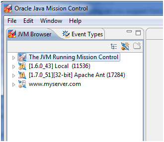
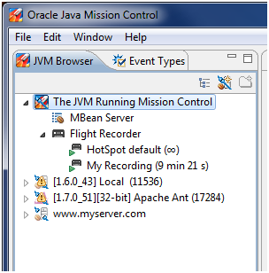
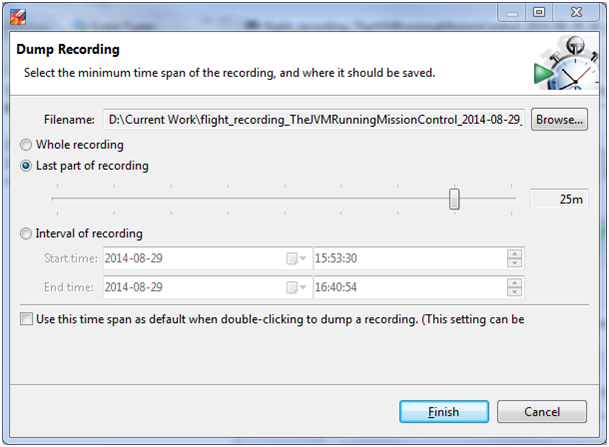
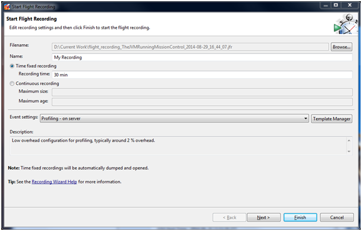
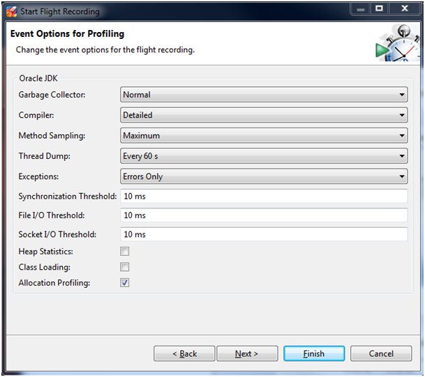
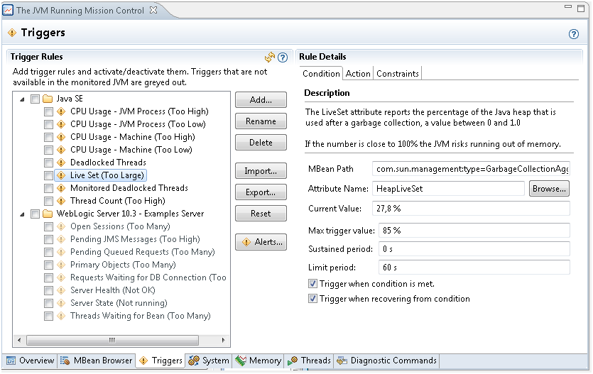
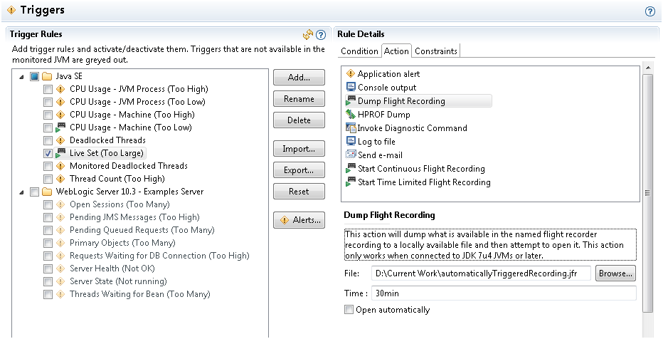

The following sections describe three ways to produce a flight recording.
Use Java Mission Control (JMC) to easily manage flight recordings. To begin with, find your server in the JVM Browser in the left most frame as shown in Figure 2-1.
Figure 2-1 Java Mission Control - Find Server
By default, any local running JVMs will be listed. Remote JVMs (running as the same effective user as the user running JMC) must be set up to use a remote JMX agent, see Monitoring and Management Using JMX Technology. Then, click the New JVM Connection button, and enter the network details.
Prior to JDK 8u40 release, the JVM must also have been started with the flag: -XX:+UnlockCommercialFeatures -XX:FlightRecorder.
Since the JDK 8u40 release, the Java Flight Recorder can be enabled during runtime.
The following are three ways to use Java Mission Control to produce a flight recording.
Inspect running recordings: Expand the node in the JVM browser to see running recordings. Figure 2-2 shows both a running continuous recording (with the infinity sign) and a timed profiling recording.
Figure 2-2 Java Mission Control - Running Recordings
Right-click any of the recordings to dump, edit, or stop the recording. Stopping a profiling recording will still produce a recording file and closing a profiling recording will discard the recording.
Dump continuous recordings: Right-click a continuous recording in the JVM Browser and then select to dump it to a file. In the dialog box that comes up, select to dump all available data or only the last part of the recording, as shown in Figure 2-3.
Figure 2-3 Java Mission Control - Dump Continuous Recordings
Start a new recording: To start a new recording, right click the JVM you want to record on and select Start Flight Recording. Then, a window displays, as shown in Figure 2-4.
Figure 2-4 Java Mission Control - Start Flight Recordings
Select either Time fixed recording (profiling recording), or Continuous recording as shown in Figure 2-4. For continuous recordings, you also specify the maximum size or age of events you want to save.
You can also select Event settings. There is an option to create your own templates, but for 99 percent of all use cases you want to select either the Continuous template (for very low overhead recordings) or the Profiling template (for more data and slightly more overhead). Note: The typical overhead for a profiling recording is about 2 percent.
When done, click Next. The next screen, as shown in Figure 2-5, gives you a chance to modify the template for different use cases.
Figure 2-5 Java Mission Control - Event Options for Profiling
The default settings give a good balance between data and performance. In some cases, you may want to add extra events. For example, if you are investigating a memory leak or want to see the objects that take up the most Java heap, enable Heap Statistics. This will trigger two Old Collections at the start and end of the recording, so this will give some extra latency. You can also select to show all exceptions being thrown, even the ones that are caught. For some applications, this will generate a lot of events.
The Threshold value is the length of event recording. For example, by default, synchronization events above 10 ms are gathered. This means, if a thread waits for a lock for more than 10 ms, an event is saved. You can lower this value to get more detailed data for short contentions.
The Thread Dump setting gives you an option to do periodic thread dumps. These will be normal textual thread dumps, like the ones you would get using the diagnostic command Thread.print, or by using the jstack tool. The thread dumps complement the events.
For a complete description of JFR flags, see Advanced Runtime Options.
The following are three ways to startup flags at the command line to produce a flight recording.
Start a profiling recording: You can configure a time fixed recording at the start of the application using the -XX:StartFlightRecording option. Because the JFR is a commercial feature, you must specify the -XX:+UnlockCommercialFeatures option. The following example illustrates how to run the MyApp application and start a 60-second recording 20 seconds after starting the JVM, which will be saved to a file named myrecording.jfr:
java -XX:+UnlockCommercialFeatures -XX:+FlightRecorder -XX:StartFlightRecording=delay=20s,duration=60s,name=myrecording,filename=C:\TEMP\myrecording.jfr,settings=profile MyApp
The settings parameter takes either the path to or the name of a template. Default templates are located in the jre/lib/jfr folder. The two standard profiles are: default - a low overhead setting made primarily for continuous recordings and profile - gathers more data and is primarily for profiling recordings.
Start a continuous recording: You can also start a continuous recording from the command line using -XX:FlightRecorderOptions. These flags will start a continuous recording that can later be dumped if needed. The following example illustrates a continuous recording. The temporary data will be saved to disk, to the /tmp folder, and 6 hours of data will be stored.
java -XX:+UnlockCommercialFeatures -XX:+FlightRecorder -XX:FlightRecorderOptions=defaultrecording=true,disk=true,repository=/tmp,maxage=6h,settings=default MyApp
Note: When you actually dump the recording, you specify a new location for the dumped file, so the files in the repository are only temporary.
For more details about configuring and managing Java Flight Recordings, see chapter 2 from Java Flight Recorder Runtime Guide.
Use diagnostic commands:
You can also control recordings by using Java command-line diagnostic commands. The simplest way to execute a diagnostic command is to use the jcmd tool located in the Java installation directory. For more details see, The jcmd Utility.
You can set up Java Mission Control to automatically start or dump a flight recording if a condition is met. This is done from the JMX console. To start the JMX console, find your application in the JVM Browser, right-click it, and select Start JMX Browser.
Select the Triggers tab at the bottom of the screen, as shown in Figure 2-6.
Figure 2-6 Java Mission Control - Automatic Recordings
You can choose to create a trigger on any MBean in the application. There are several default triggers set up for common conditions such as high CPU usage, deadlocked threads, or too large of a live set. Select Add to choose any MBean in the application, including your own application-specific ones. When you select your trigger, you can also select the conditions that must be met. For more information, click the question mark in the top right corner to see the built-in help.
Click the boxes next to the triggers to have several triggers running.
Once you have selected your condition, click the Action tab. Then, select what to do when the condition is met. Finally, choose to either dump a continuous recording or to start a time-limited flight recording as shown in Figure 2-7.
Figure 2-7 Java Mission Control - Use Triggers
